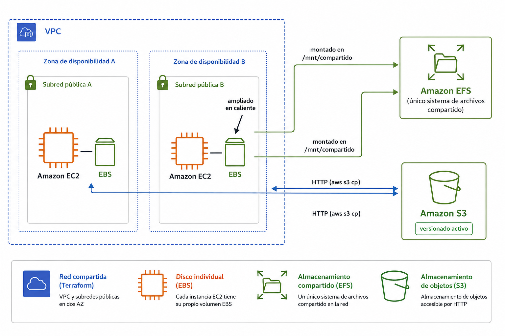
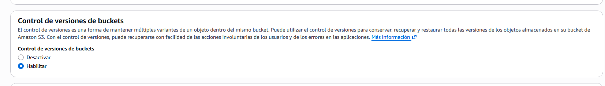
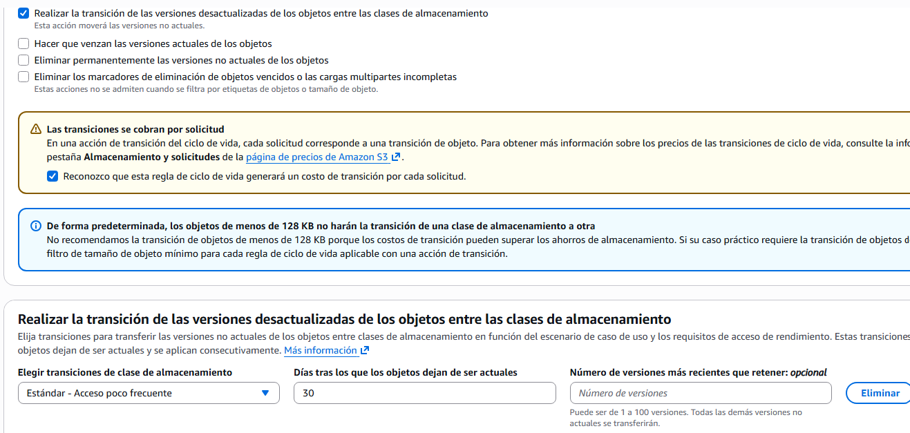
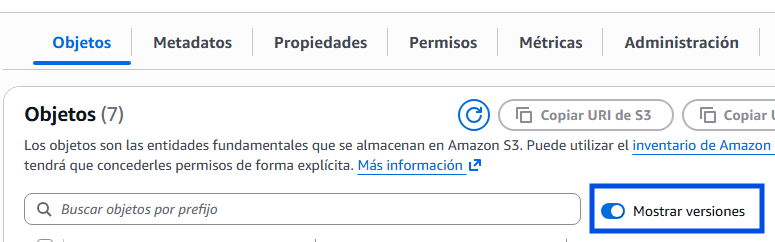
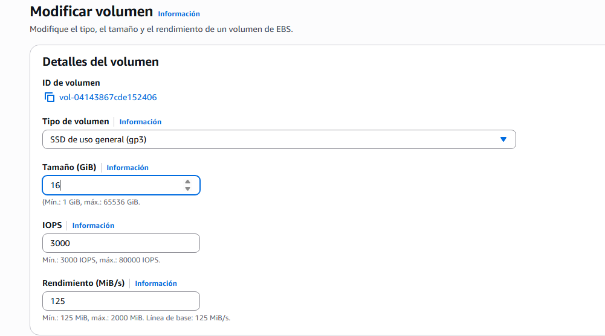
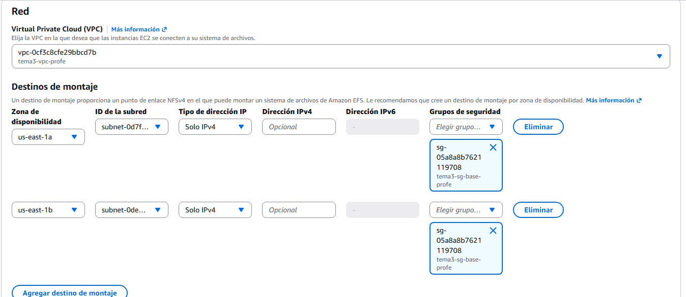
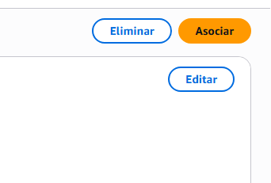

🧪 Actividad 3.1: S3, EBS y EFS: tres soluciones de almacenamiento¶
Descarga la plantilla
📄 Plantilla 3.1 — S3, EBS y EFS: tres soluciones de almacenamiento
Descarga los recursos
📦 Recursos de la Actividad 3.1 — lo vas a subir y descomprimir en el Paso 1 de esta actividad.
Contexto¶
La plataforma de gestión de un festival de música tiene ahora mismo tres necesidades de almacenamiento distintas, y cada una pide una familia diferente: guardar las fotos que suben los asistentes durante el evento, ampliar el disco de una instancia cuyo espacio de logs se ha quedado corto, y compartir esas mismas fotos entre las dos instancias que sirven contenido durante el festival. Hoy resuelves las tres, cada una con la herramienta que le corresponde.

Qué vas a practicar¶
- Crear un bucket S3 y activar versionado y una regla de ciclo de vida sobre él.
- Ampliar el volumen de disco de una instancia en marcha.
- Crear un sistema de archivos compartido (EFS) y montarlo desde dos instancias distintas.
- Elegir familia y clase de almacenamiento razonando por coste según el patrón de acceso.
Requisitos previos¶
El Tema 2 ha terminado sin dejar ninguna red montada — al cerrar la Actividad 2.3 has borrado la VPC entera. Hoy no la reconstruyes a mano: el Paso 1 arranca desplegando una red idéntica para todo el mundo con Terraform, la herramienta de infraestructura como código que verás en detalle en el Tema 6. De momento la usas como una herramienta ya hecha — ejecutas dos comandos y en unos segundos tienes la VPC, las cuatro subredes y el grupo de seguridad listos, exactamente igual que los que ya conoces del Tema 2. Los apuntes de esta sesión — «Servicios de almacenamiento».
Recursos de apoyo
Dentro del zip que has descargado arriba tienes dos carpetas: recursos/tema3/actividad_3_1/generar_fotos_ejemplo.sh, un script que genera 5-6 ficheros de ejemplo con extensión .jpg (contenido aleatorio, no fotos reales) para que tengas algo que subir a S3 y a EFS sin buscar imágenes por tu cuenta; y recursos/tema3/red-base/, la configuración Terraform que despliega la red de esta sesión.
Parte A — Resuelve las tres necesidades de almacenamiento (guiada)¶
Paso 1 — Despliega la red y prepara el escenario¶
- Desde tu CloudShell (Tema 1): sube
actividad_3_1_recursos.zipcon Actions → Upload file y descomprímelo (unzip actividad_3_1_recursos.zip). -
Terraform no viene instalado por defecto en CloudShell — instálalo tú mismo, es un único binario y no hace falta ser administrador:
-
Entra en la carpeta de la red (
cd recursos/tema3/red-base) y despliégala:Terraform te lista los recursos que va a crear (VPC, cuatro subredes, tabla de rutas, grupo de seguridad) y pide confirmación — escribe
yes. Al terminar, imprime los IDs que necesitas para el resto de la actividad (vpc_id,subnet_publica_a_id,subnet_privada_a_id,subnet_publica_b_id,subnet_privada_b_id,security_group_id): guárdalos, los vas a usar varias veces.Por qué esto no es hacer trampa
Terraform no está resolviendo ningún problema de almacenamiento por ti — solo te ahorra reconstruir a mano, otra vez, la misma red que ya montaste y entendiste en el Tema 2. El objetivo de hoy son S3, EBS y EFS, no las subredes.
-
Busca "S3" en el buscador de servicios → Crear bucket. Dale un nombre único (por ejemplo
festival-fotos-<tu-identificador>), deja el bloqueo de acceso público en su valor por defecto (activado — este bucket no necesita ser público), y baja hasta Control de versiones de buckets → Habilitar: no hace falta activarlo después por separado, el propio asistente de creación ya lo ofrece.
-
En el menú lateral del bucket ya creado, entra en Administración → Reglas de ciclo de vida → Crear regla de ciclo de vida.
- Dale un nombre a la regla, y en su ámbito elige aplicarla a todos los objetos del bucket.
- En las acciones, marca Realizar la transición de las versiones desactualizadas de los objetos entre las clases de almacenamiento (no la primera casilla, "versiones actuales" — esa movería la versión vigente, no las antiguas), elige la clase de acceso infrecuente, y define tras cuántos días se aplica (por ejemplo, 30). Deja vacío Número de versiones más recientes que retener: ese campo es para lo contrario de lo que quieres — si pones un número, esas versiones no actuales más recientes se quedarían sin transicionar nunca; en blanco, la regla se aplica a todas. Marca también la casilla de reconocimiento del coste de transición, más abajo — sin ella el asistente no te deja crear la regla.
-
Crea la regla.

-
Lanza dos instancias mínimas — Amazon Linux, el tipo más pequeño disponible, cada una en una subred pública distinta (
subnet_publica_a_idysubnet_publica_b_id) y con elsecurity_group_idque ha impreso Terraform. No hace falta que sirvan ninguna aplicación web: para esta actividad son solo el punto desde el que vas a operar sobre el almacenamiento. En Configuración avanzada, asigna el Perfil de instancia de IAMLabInstanceProfilea las dos — sin él, la CLI dentro de la instancia no tiene con qué autenticarse contra S3, y los comandosaws s3 cpdel Paso 3 fallarían con "Unable to locate credentials". - Desde tu CloudShell, ejecuta
recursos/tema3/actividad_3_1/generar_fotos_ejemplo.shy sube las fotos generadas al bucket conaws s3 cp. - Cambia el contenido de una de las fotos (por ejemplo, regenerándola) y vuelve a subirla con el mismo nombre.
- En el bucket, activa el interruptor Mostrar versiones para comprobar que la versión anterior sigue existiendo, no se ha sobrescrito de verdad.

Comprueba: en el panel de versiones del bucket, que ves al menos dos versiones del mismo fichero.
Captura: tu propio bucket creado, la regla de ciclo de vida configurada, y el listado de versiones del fichero mostrando al menos dos.
Paso 2 — Amplía el disco de una instancia, sin cortar el servicio¶
El disco de logs de una de las dos instancias del festival se ha quedado corto de espacio. Amplía el tamaño de su volumen EBS: por consola es EC2 → Volúmenes → selecciona el tuyo → Acciones → Modificar volumen; por CLI es una sola línea:
| Bash | |
|---|---|

Comprueba: que aws ec2 describe-volumes-modifications --volume-id <volume-id> muestra el cambio en estado optimizing o completed.
Con el volumen ya ampliado en AWS, conéctate a la instancia — como sabes por los apuntes, el sistema operativo todavía no se ha enterado del nuevo tamaño, y no se va a enterar solo:
- Comprueba qué ve el sistema todavía:
df -hsigue mostrando el tamaño antiguo, aunquelsblkya vea el disco físico más grande. - Extiende la partición hasta ocupar el espacio nuevo: primero mira con
lsblkel nombre real de tu disco (en estas instancias suele ser/dev/nvme0n1, no/dev/xvda), y ejecutasudo growpart /dev/nvme0n1 1. - Extiende el sistema de ficheros sobre la partición ya ampliada. Amazon Linux usa XFS por defecto:
sudo xfs_growfs -d /. Sidf -h -Tte muestraext4en vez dexfs, el comando equivalente essudo resize2fs /dev/nvme0n1p1. - Comprueba con
df -hque el nuevo tamaño ya aparece disponible — todo esto sin haber reiniciado la instancia ni cortado ningún servicio.
Comprueba: que el nuevo espacio de disco es utilizable de verdad — por ejemplo, escribiendo un fichero de prueba que supere el tamaño original.
Captura: la salida de describe-volumes-modifications, y el comando dentro de la instancia mostrando el nuevo tamaño disponible.
Paso 3 — Comparte las fotos entre las dos instancias con EFS¶
- Busca "EFS" en el buscador de servicios → Sistemas de archivos → Crear → Personalizar (no la Creación rápida: necesitas elegir tú la VPC y las subredes).
-
Sigue el asistente, que tiene cuatro pasos:
- Configuración del sistema de archivos: dale un nombre y deja el resto por defecto (tipo Regional, cifrado habilitado, rendimiento Elastic) — no necesitas tocar nada más aquí. Pulsa Siguiente.
-
Acceso a la red: aquí eliges de verdad la red. Selecciona la VPC que ha creado Terraform (
vpc_iddel Paso 1). El asistente te muestra una fila por zona de disponibilidad — deja un punto de montaje en cada una de las dos, cada uno en su subred pública correspondiente (subnet_publica_a_idysubnet_publica_b_id, las mismas donde has lanzado tus dos instancias), y en el grupo de seguridad de cada fila selecciona elsecurity_group_idque ya tienes de Terraform: su regla de tráfico interno ya deja pasar el puerto NFS (2049) entre las instancias del grupo, sin necesidad de abrirlo a0.0.0.0/0. Pulsa Siguiente.
-
Política del sistema de archivos: no hace falta nada aquí. Pulsa Siguiente.
- Revisar y crear: revisa el resumen y crea el sistema de archivos.
-
Desde cada una de las dos instancias (conéctate a cada una por separado, el montaje es cosa de cada instancia):
- Comprueba si ya tienes el cliente NFS instalado:
rpm -q nfs-utils. Si no aparece instalado, instálalo:sudo dnf install -y nfs-utils. - Crea la carpeta donde vas a montar el sistema de archivos:
sudo mkdir -p /mnt/efs-festival. -
En la consola, entra en tu sistema de archivos EFS → pestaña Asociar → pulsa el botón Asociar para que te muestre el comando de montaje para cliente NFS (no el del conector de EFS, que necesitaría instalar un paquete aparte). Tiene esta forma — solo cambia el final por tu carpeta:

Bash -
Comprueba que ha quedado montado de verdad:
df -h | grep efstiene que aparecer, con el tamaño del sistema de archivos EFS, no el de tu disco local.
Solo la primera vez, desde cualquiera de las dos instancias: la carpeta raíz de un EFS recién creado pertenece a
rootcon permisos restringidos, así queec2-userno puede escribir ahí todavía. Cámbiale el dueño una sola vez —el cambio es sobre el sistema de archivos compartido, no hace falta repetirlo en la otra instancia—:sudo chown ec2-user:ec2-user /mnt/efs-festival. - Comprueba si ya tienes el cliente NFS instalado:
-
Desde la primera instancia, descarga una de las fotos del bucket S3 del Paso 1 (
aws s3 cp s3://<tu-bucket>/<foto> .) y cópiala a/mnt/efs-festival. - Desde la segunda instancia, comprueba que la foto ya está en
/mnt/efs-festival, sin haberla copiado tú a mano.
Comprueba: que la foto subida desde la primera instancia aparece inmediatamente visible desde la segunda, sin ningún paso de sincronización manual.
Captura: tu propio sistema de archivos EFS creado, y la misma foto visible desde las dos instancias tras montarlo.
Reflexiona
Has resuelto la misma pregunta —"¿dónde guardo esto?"— de tres formas distintas en la misma sesión. Si mañana necesitaras guardar las grabaciones completas de los conciertos del festival, un archivo pesado que casi nadie va a volver a consultar salvo que haya una reclamación puntual, ¿cuál de las tres familias elegirías y por qué esa y no las otras dos?
Parte B — El salto: recuperar, acceder por HTTP y decidir por coste (reto)¶
Tres retos, cada uno más exigente que su equivalente de la Parte A. No hay comandos dados para ninguno — solo el objetivo.
-
Recupera lo irrecuperable: borra "por accidente" una foto del bucket versionado del Paso 1, y recupérala sin perder ni una versión. Documenta cómo lo has hecho.
Comprueba: que la foto recuperada tiene exactamente el mismo contenido que antes de borrarla.
Captura: el historial de versiones con el marcador de eliminación todavía presente (la prueba de que de verdad estaba "borrada"), y el mismo historial después de quitar el marcador, con la foto otra vez como versión actual.
-
Accede sin pasar por la CLI: hasta ahora siempre has llegado a tus fotos con
aws s3 cp, que por debajo también usa HTTP pero nunca lo ves como tal — como tu bucket sigue con el bloqueo de acceso público activado, abrir la URL del objeto a pelo en el navegador te daría un403. Investiga cómo generar una URL prefirmada (una URL normal de S3 con una firma temporal incrustada, que demuestra que quien la generó tenía permiso, sin que tengas que dar tus credenciales a quien la abre) para una de tus fotos, y ábrela directamente en el navegador — sin usaraws s3 cpen ningún momento.Comprueba: que la foto se abre en el navegador sin ningún comando de descarga de por medio, y que esa misma URL deja de funcionar pasado el tiempo que le hayas dado.
Captura: la foto abierta en el navegador desde la URL prefirmada.
-
Decide por coste, no por costumbre: elige familia y clase de almacenamiento para estos tres casos de uso del festival, y calcula el coste mensual estimado real de cada uno con la calculadora oficial de AWS — no el precio por GB suelto, la cifra final en euros al mes para la cantidad concreta que se indica:
- Las fotos de asistentes ya archivadas tras el evento, que casi nadie vuelve a consultar: 80 GB almacenados, unas 50 operaciones de lectura al mes.
- El listado de control de acceso, leído constantemente durante las horas del evento: 2 GB almacenados, unas 5.000 operaciones de lectura al mes.
- Una copia de seguridad diaria de la base de datos de reservas: 150 GB almacenados, 30 operaciones de escritura al mes (una copia diaria) y prácticamente ninguna lectura.
Justifica cada elección — la respuesta "S3 estándar para todo" no vale como justificación.
Comprueba: que cada caso tiene una cifra de coste mensual estimado real en euros, calculada con la calculadora para esa cantidad concreta (no un precio genérico por GB), y una justificación propia.
Captura: la pantalla de la calculadora de AWS con el resultado de cada uno de los tres casos, y la tabla resumen con el coste mensual de cada uno y su justificación.
Criterios de evaluación¶
Parte A — hasta 7 puntos
| Apartado | Puntos |
|---|---|
| Bucket creado con versionado y ciclo de vida activos | 1 |
| Disco ampliado en AWS y extendido de verdad dentro de la instancia, sin reiniciar ni cortar servicio | 2 |
| EFS creado y montado desde dos instancias, con fichero compartido visible | 4 |
Parte B — reto, hasta 3 puntos adicionales (máximo total: 10)
| Apartado | Puntos |
|---|---|
| Objeto recuperado sin pérdida | 1 |
| Acceso por HTTP mediante URL prefirmada, con caducidad comprobada | 1 |
| Decisión de familia/clase por coste, justificada para los tres casos | 1 |
✅ Cierre¶
Ya sabes elegir familia de almacenamiento según el patrón de acceso, no por costumbre, y sabes que ampliar un disco en AWS es solo la mitad del trabajo — la otra mitad vive dentro del sistema operativo. La próxima sesión dejas de guardar datos sueltos: montas una base de datos relacional gestionada, y conectas una aplicación a ella sin escribir ni una sola credencial en el código.
Antes de salir: elimina todo, sin dejar nada suelto
Hoy no se queda nada a medias — ni siquiera el bucket. En este orden:
- Termina las dos instancias del festival.
- Borra el sistema de archivos EFS — factura por GB almacenado cada mes mientras exista, y no le sirve a ninguna actividad posterior.
- Vacía y borra el bucket de fotos. Como tiene el versionado activo, vaciarlo no es solo borrar los objetos que ves: cada foto tiene varias versiones (y puede quedar algún marcador de eliminación de tus pruebas de la Parte B), y todas cuentan para el almacenamiento aunque no aparezcan en el listado normal. Actívalo así: entra en el bucket → Vaciar → escribe el nombre del bucket para confirmar — la propia consola se encarga de borrar todas las versiones de todos los objetos, no solo la actual. Con el bucket ya vacío, bórralo desde Sus buckets → selecciona el tuyo → Eliminar.
- Con las instancias, el EFS y el bucket ya borrados, vuelve a
recursos/tema3/red-baseen tu CloudShell y ejecutaterraform destroy -var="identificador=<tu-identificador>"— es la forma correcta de deshacer exactamente lo que Terraform creó, en el orden correcto. Si te lo pide antes de tiempo y falla porque el EFS o las instancias todavía existen dentro de la VPC, es la señal de que te has dejado algo de los pasos anteriores sin borrar.